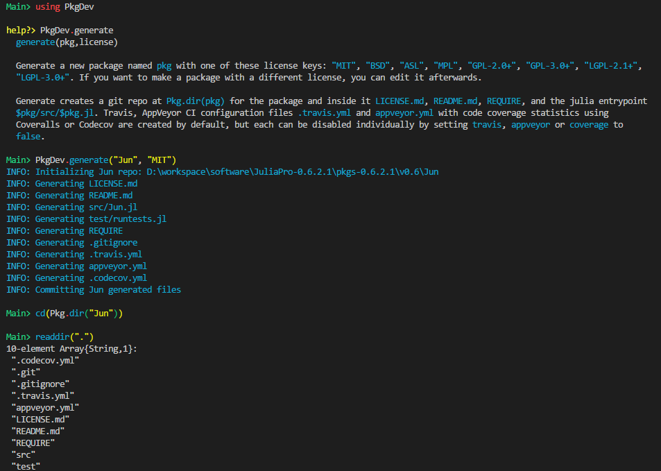

keywords: Julia CJKmainfont: KaiTi –-
Julia下的Packages概览
光说不练假把式。本着实用主义的精神，在造轮子之前，不妨先花些时间学习下现有的一些包。
20180319
|#|Stars|Link| |-|––-|––| |1|1206|IJulia| |2|1131|Gadfly| |3|1008|Mocha| |4|479|Knet| |5|456|JuMP| |6|444|DataFrames| |7|443|Plots| |8|433|DifferentialEquations| |9|416|PyCall| |10|402|DSGE| |11|331|Cxx| |12|299|TensorFlow| |13|288|MXNet| |14|287|Distributions| |15|286|Escher|
准备
首先，回顾下文档中关于Package的介绍。执行Pkg.add("PkgDev")后，尝试构建一个新的Package，梳理下Package的基本结构。

REQUIRE文件中目前只有一个julia 0.6，深入了解某个Package之前，REQUIRE是首先要查看的，每一行表示了一个依赖（一般还会指定相应的版本信息）。.codecov.yml是代码覆盖率检查，.travis.yml和appveyor.yml是用来做CI的，这些可以先不管src/目录下现在还只有一个单独的文件Jun.jltest/目录下只有一个runtests.jl
嗯，其实就是个空壳，啥也没有......
未来还有会有Pkg3，结构上不太一样了，等这个模块完善了再介绍下。
Overview
尽管根据star数量来决定学习顺序似乎是个更务实的做法，不过各个库之间的依赖关系很复杂，而且不同库之间的复杂程度也很不一样，我决定从一些基础的开始。
[Missings.jl][]
[Missings.jl][]这个库简单实用，可以看到，其REQUIRE文件只包含
- julia 0.6
- Compat 0.45.0
第一行指定了julia的版本（前面提到过，新创建的库中都会包含这行），第二行Compat是用来对不同版本的julia提供兼容的。
[Missings]: https://github.com/JuliaData/Missings.jl